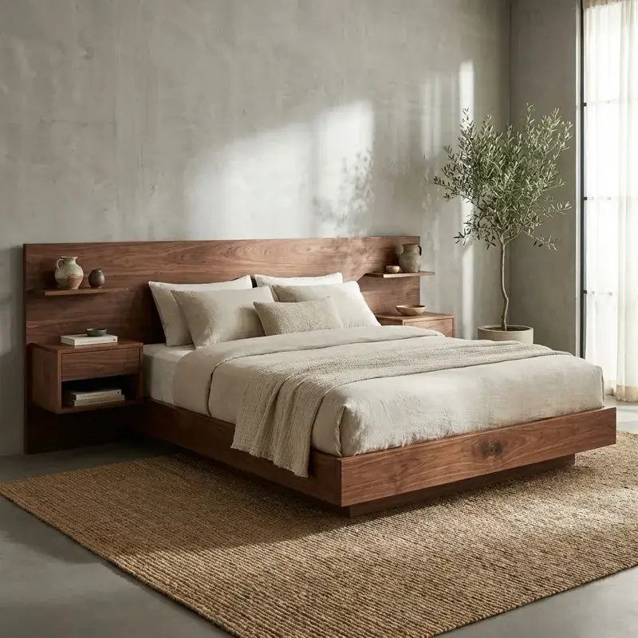

Why Choose Custom Furniture in Cedar Rapids?

When you furnish your home, you have two paths: convenience or character. While big-box stores in Iowa offer convenience, they often lack the durability and soul of a piece made just for you.
At White Angus Wood Works in Cedar Rapids, we believe that furniture shouldn't be disposable. It should be a part of your family's story. Here are three reasons why commissioning a custom piece is the better choice for your home.
1. Made for Your Specific Space
We've all been there—finding a table that's perfect in style but two inches too long for the dining room. Or a bookshelf that leaves an awkward gap in the alcove.
Custom woodworking eliminates compromise. We build to your exact dimensions. Whether you have a historic home in Marion with quirky angles or a modern build in Hiawatha needing sleek lines, a custom piece is designed to fit the architecture of your room seamlessly.
2. Materials That Last a Lifetime
Most mass-produced furniture uses particle board, veneers, or softwoods that dent easily. We source premium domestic hardwoods like Black Walnut, White Oak, Cherry, and Maple—often from local mills right here in the Midwest.
We use traditional joinery techniques like mortise-and-tenon and dovetails. These mechanical connections are stronger than screws and glue alone, ensuring your bed or table will serve your children and grandchildren.
3. Supporting Local Craftsmanship
When you work with a local studio, you aren't just buying a product; you're commissioning an artist. You can visit the shop, see the raw boards, and shake the hand of the person building your furniture.
There is a deep satisfaction in knowing the origin of the things that surround you. A dining table isn't just wood; it's the centerpiece of holiday meals and family conversations. It deserves to be built with care.
Start Your Commission
Ready to discuss your project? We are currently accepting commissions for the upcoming season. Reach out to us to start the design process.
The Custom Furniture Challenge
Test your knowledge of custom woodworking and premium materials.
Across
- 2 Built to your exact specifications
- 3 Prized dark hardwood species native to the Midwest
- 4 Furniture meant to last for generations
Down
- 1 Traditional wood connections stronger than screws
- 5 Light-colored hardwood known for its durability